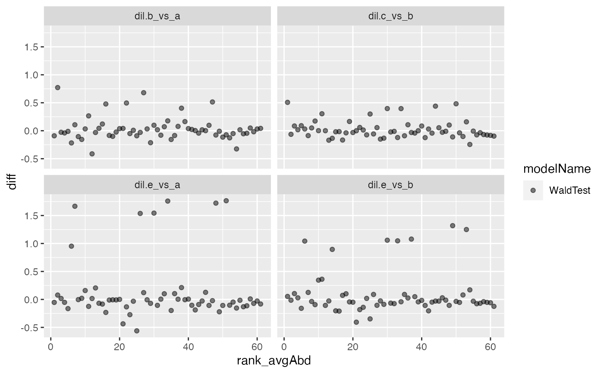
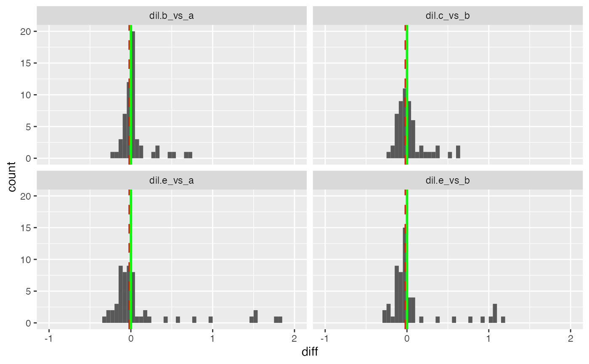
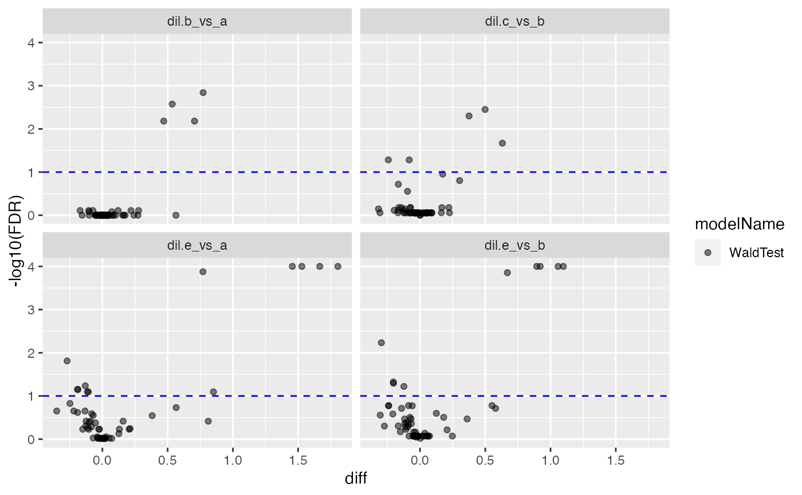

plot contrasts
plot contrasts
Other modelling:
ContrastsModerated,
ContrastsProDA,
ContrastsROPECA,
ContrastsSAINTexpress,
ContrastsSimpleImpute,
ContrastsTable,
Contrasts,
INTERNAL_FUNCTIONS_BY_FAMILY,
LR_test(),
Model,
build_model(),
get_complete_model_fit(),
get_imputed_contrasts(),
get_p_values_pbeta(),
isSingular_lm(),
linfct_all_possible_contrasts(),
linfct_factors_contrasts(),
linfct_from_model(),
linfct_matrix_contrasts(),
merge_contrasts_results(),
model_analyse(),
model_summary(),
moderated_p_limma_long(),
moderated_p_limma(),
my_contest(),
my_contrast_V1(),
my_contrast_V2(),
my_contrast(),
my_glht(),
pivot_model_contrasts_2_Wide(),
plot_lmer_model_and_data(),
plot_lmer_peptide_noRandom(),
plot_lmer_peptide_predictions(),
plot_lmer_predicted_interactions(),
strategy_lmer(),
summary_ROPECA_median_p.scaled()
Other plotting:
INTERNAL_FUNCTIONS_BY_FAMILY,
UpSet_interaction_missing_stats(),
medpolish_estimate_df(),
missigness_histogram(),
missingness_per_condition_cumsum(),
missingness_per_condition(),
plot_NA_heatmap(),
plot_estimate(),
plot_heatmap_cor(),
plot_heatmap(),
plot_hierarchies_add_quantline(),
plot_hierarchies_boxplot_df(),
plot_hierarchies_line_df(),
plot_hierarchies_line(),
plot_intensity_distribution_violin(),
plot_pca(),
plot_raster(),
plot_sample_correlation()
contrastDFdata frame with contrasts
modelNameof column with model name
subject_Idhierarchy key columns
prefixdefault Contrasts - used to generate file names
diffcolumn with fold change differences
contrastcolumn with contrasts names, default "contrast"
volcano_specvolcano plot specification
score_specscore plot specification
histogram_specplot specification
fcthreshfold change threshold
avg.abundancename of column containing avg abundance values.
new()create Crontrast_Plotter
ContrastsPlotter$new(
contrastDF,
subject_Id,
volcano = list(list(score = "FDR", thresh = 0.1)),
histogram = list(list(score = "p.value", xlim = c(0, 1, 0.05)), list(score = "FDR",
xlim = c(0, 1, 0.05))),
score = list(list(score = "statistic", thresh = NULL)),
fcthresh = 1,
modelName = "modelName",
diff = "diff",
contrast = "contrast",
avg.abundance = "avgAbd"
)contrastDFframe with contrast data
subject_Idcolumns containing subject Identifier
volcanowhich score to plot and which ablines to add.
histogramwhich scores to plot and which range (x) should be shown.
scorescore parameters
fcthreshdefault 1 (log2 FC threshold)
modelNamename of column with model names
difffold change (difference) diff column
contrastcontrast column
avg.abundancename of column with average abundance
volcano()volcano plots (fold change vs FDR)
ContrastsPlotter$volcano(
colour,
legend = TRUE,
scales = c("fixed", "free", "free_x", "free_y")
)volcano_plotly()plotly volcano plots
ContrastsPlotter$volcano_plotly(
colour,
legend = TRUE,
scales = c("fixed", "free", "free_x", "free_y")
)ma_plot()ma plot
MA plot displays the effect size estimate as a function of the mean protein intensity across groups. Each dot represents an observed protein. Red horizontal lines represent the fold-change threshold.
Sometimes measured effects sizes (differences between samples groups) are biased by the signal intensity (here protein abundance). Such systematic effects can be explored using MA-plots.
ma_plotly()ma plotly
score_plot()plot a score against the log2 fc e.g. t-statistic
score_plotly()plot a score against the log2 fc e.g. t-statistic
istar <- prolfqua_data('data_ionstar')$normalized()
istar$config <- old2new(istar$config )
istar_data <- dplyr::filter(istar$data ,protein_Id %in% sample(protein_Id, 100))
modelName <- "Model"
modelFunction <-
strategy_lmer("transformedIntensity ~ dilution. + (1 | peptide_Id)",
model_name = modelName)
pepIntensity <- istar_data
config <- istar$config
config$table$hierarchy_keys_depth()
#> [1] "protein_Id"
mod <- build_model(
pepIntensity,
modelFunction,
modelName = modelName,
subject_Id = config$table$hierarchy_keys_depth())
#> boundary (singular) fit: see help('isSingular')
#> Joining, by = "protein_Id"
#mod$get_coefficients()
Contr <- c("dil.b_vs_a" = "dilution.b - dilution.a",
"dil.e_vs_a" = "dilution.e - dilution.a"
,"dil.e_vs_b" = "dilution.e - dilution.b",
"dil.c_vs_b" = "dilution.c - dilution.b"
)
contrast <- prolfqua::Contrasts$new(mod,
Contr)
tmp <- contrast$get_contrasts()
#> determine linear functions:
#> compute contrasts:
#> computing contrasts.
#> Warning: Model is rank deficient!
#> Joining, by = c("protein_Id", "contrast")
cp <- ContrastsPlotter$new(tmp ,
contrast$subject_Id,
volcano = list(list(score = "FDR", thresh = 0.1)),
histogram = list(list(score = "p.value", xlim = c(0,1,0.05)),
list(score = "FDR", xlim = c(0,1,0.05))),
score =list(list(score = "statistic", thresh = 5)))
cp$volcano_plotly()
#> Warning: `gather_()` was deprecated in tidyr 1.2.0.
#> ℹ Please use `gather()` instead.
#> ℹ The deprecated feature was likely used in the plotly package.
#> Please report the issue at <https://github.com/plotly/plotly.R/issues>.
#> $FDR
#>
cp <- ContrastsPlotter$new(tmp ,
contrast$subject_Id,
volcano = list(list(score = "FDR", thresh = 0.1)),
histogram = list(list(score = "p.value", xlim = c(0,1,0.05)),
list(score = "FDR", xlim = c(0,1,0.05))),
fcthresh = NULL,
score =list(list(score = "statistic", thresh = 5)))
cp$fcthresh
#> NULL
cp$volcano_plotly()
#> $FDR
#>
p <- cp$score_plot(legend=FALSE)
cp$score_plotly()
#> $statistic
#>
p <- cp$histogram()
p <- cp$histogram_estimate()
res <- cp$volcano()
respltly <- cp$volcano_plotly()
length(respltly)
#> [1] 1
cp$ma_plot()

cp$ma_plotly(rank=TRUE)
res <- cp$barplot_threshold()
names(res)
#> [1] "FDR"
cp$histogram_diff()

cp$volcano()
#> $FDR

#>